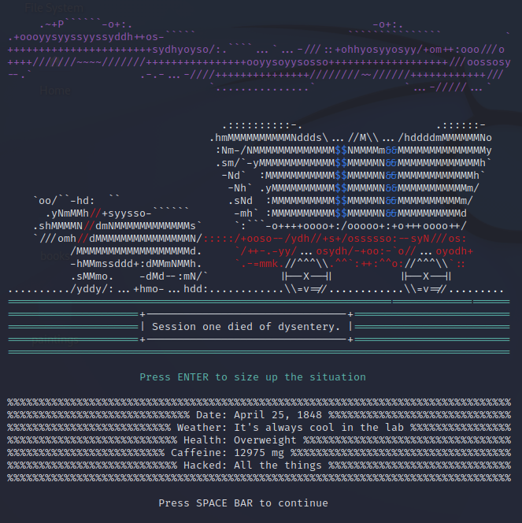
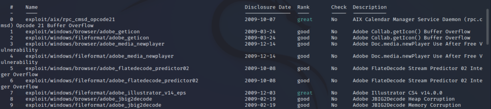

During my studies for the COMPTIA Security+ certification, I came across
something called Metasploit. Metasploit is described as a computer
security project that provides information about security vulnerabilites,
aids in pentesting and IDS (intrusion detection system) signature
development.
My interest in the field of cyber security has been mainly on the blue
team but I figured it is always a good opportunity to learn and this
seemed pretty interesting. As such, I went to work learning about
Metasploit the only way I know how - downloading the application and
poking around.
Installation
The
Metasploit Wiki
suggested I install on Linux. I jumped at the opportunity - this allows me
to fire up a virtual machine, which is always fun. Once I got through the
copy-pasting of installation commands, we were ready to go. The start-up
screen was funny and nerdy - kinda what I was expecting.

Kinnnddaaa funny, I suppose. Think I'm definitely missing an inside joke.
My exposure to Metasploit extends to getting a question about it wrong in
a past paper, and that's it. But that's why we do these things :).
The first tip informed me that Search can apply complex filters such as
search cve:2009 type:exploit.
And so I typed in search cve:2009 type:exploit.

Results of my first search on Metasploit
The resulting search appeared to be a list of vulnerabilities along with
some details about them. In order to go into a bit more granular detail, I
chose a vulnerability (one that was ranked excellent, as we don't settle
for anything less on this blog) and typed in info [#].
A bit more detail about my chosen vulnerability
We appear to be dealing with the Symantec Center Alert Management System
Arbitrary Command Execution. This alert management system is prone to a
remote command-injection vulnerability because the application fails to
properly sanitise user-supplied input. Let's break down a some of the
terminology from this description:
Remote command-injection: As mentioned previously, incorrectly sanitised
user input can cause a system to do something unwanted. In this case, it
allows a remote command-injection. This allows the attacker to execute a
command within the system - naturally something the administrator would
want to avoid.
Reading through this description, I also realised that Metasploit is not
providing a list of vulnerabilities. It takes this a step further and
provides a list of exploits. Exploits take advantage of vulnerabilities.
This struct me as being a little more sinister. Of course, these are to be
used in pentesting and it is important that this sort of information is
publically available for testing purposes. But it still felt a little...
evil.
Conclusion
This was a brief introduction to Metasploit. All I really did was download
it, run a simple search function and go into a bit more detail on one of
the exploits provided. However, this was powerful in of itself - to have
access to this sort of information within a few taps of the keyboard was
pretty daunting. I think Metasploit has a lot more to offer and I am
excited to share these features with you once I have learned them myself.